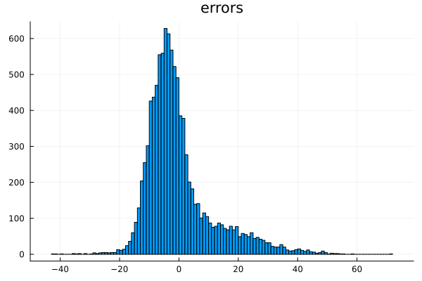

Really Robust Regression
Problems with Huber loss.
LightGBM and XGBoost offer a Huber and pseudo-Huber loss respectively. The mae (mean absolute error) loss is also sometimes used for outlier-robust regression.
We assume that the user's objective is to recover the conditional mean E(y|x), and a Huber or mae loss is employed in the hope of improving inference when the errors ε = y - E(y|x), as proxied by the residuals, show signs of being leptokurtik (fat-tailed).
There are two main problems with these losses (or with their implementations), which are corrected in HTBoost:
Unless the errors ε are perfectly symmetric, the GBM will make biased forecasts (forecasts with the wrong conditional and unconditional mean), even if trained on large samples. This problem is bigger for mae (which recovers the conditional median) and if the SNR (signal-to-noise ratio) is low.
The implementation of the Huber loss scales the robustness parameter ψ once, on the unconditional distribution. As a result, inference is only robust if the SNR is low; in high SNR cases the results are nearly indistinguishable from those of a L2 loss.
HTBoost fixes these two problems by correcting for the bias, and recalibrating the robustness parameter ψ after each tree. HTBoost also introduces (in the context of GBMs) a student-t loss (loss = :t), where the dispersion and degrees-of-freedom parameters are estimated internally by maximum likelihood after each tree, hence solving problem 2.
The student-t loss is recommended in HTBoost. The Huber loss is available but not recommended in general (a possible exception is the original motivation for the Huber loss: y is contaminated by measurement errors).
As a result, the :t loss in HTBoost is, unlike the Huber loss in XGBoost and LightGBM, typically more accurate than the :L2 loss when residuals are leptokurtik (fat-tailed) or strongly skewed, as long as errors are iid. If errors are heteroskedastic (i.e. if var(ε) depends on x) neither the Huber nor the t distributions will in general recover the true E(y|x) asymptotically.
See the examples Huber and t unbiased and student t for a slightly more detailed presentation. I intend to discuss these results more extensively in a paper in the near future.
The code below illustrates these points.
number_workers = 8 # desired number of workers
using Distributed
nprocs()<number_workers ? addprocs( number_workers - nprocs() ) : addprocs(0)
@everywhere using HybridTreeBoosting
using Random,Statistics,Plots,Distributions
using LightGBMGenerate data from y = f(x) + ε, where f(x) is the Friedman's function, and ε has a strongly right-skewed distribution (a mixture of two normals.)
# Options for data generation
n = 10_000
p = 5
stde = 5 # std(ε). 1 for high SNR, 5 for lowish, 10 for low (R2 around 4%)
m2 = 3*stde # mean of second component of the mixture. 0 for symmetric fat tails, 3*stde for skewed
stde2 = 3*stde # second component of the mixture has larger variance
prob2 = 0.3 # probability of the second component
dgp(x) = 10.0*sin.(π*x[:,1].*x[:,2]) + 20.0*(x[:,3].-0.5).^2 + 10.0*x[:,4] + 5.0*x[:,5]
# Generate data.
n_test = 200_000
x,x_test = rand(n,p), rand(n_test,p)
ftrue = dgp(x)
ftrue_test = dgp(x_test)
u1 = randn(n)*stde
u2 = m2 .+ randn(n)*stde2
S1 = rand(n).>prob2
u = @. u1*S1 + u2*(1 - S1) - prob2*m2 # skewed distribution with zero mean
y = ftrue + u
histogram(u,title="errors",label="")
Specify parameters for HTBoost and LightGBM, for a L2 and Huber regression. No cv is performed on either since it would not change the conclusions we are interestd in.
param = HTBparam(loss=:Huber,modality=:fastest,warnings=:Off)
data = HTBdata(y,x,param)
# ligthGBM parameters
estimator_l2 = LGBMRegression(
objective = "regression",
num_iterations = 1000,
early_stopping_round = 100)
estimator_huber = LGBMRegression(
objective = "huber",
metric = ["huber"],
num_iterations = 1000,
early_stopping_round = 100)
Fit LightGBM with both L2 and Huber loss.
n_train = Int(round((1-param.sharevalidation)*length(y)))
x_train = x[1:n_train,:]; y_train = Float64.(y[1:n_train])
x_val = x[n_train+1:end,:]; y_val = Float64.(y[n_train+1:end])
LightGBM.fit!(estimator_l2,x_train,y_train,(x_val,y_val),verbosity=-1)
yf = LightGBM.predict(estimator,x_test)[:,1]
mse_l2 = sum((yf - ftrue_test).^2)/n_test
println("\n bias = E(prediction) - E(y) ")
println("\n bias of lightGBM with L2 loss ", mean(yf-ftrue_test))
LightGBM.fit!(estimator_huber,x_train,y_train,(x_val,y_val),verbosity=-1)
yf_gbm = LightGBM.predict(estimator_huber,x_test)[:,1]
mse_huber = sum((yf_gbm - ftrue_test).^2)/n_test
println(" bias of lightGBM with Huber loss ", mean(yf_gbm-ftrue_test))
println("\n oos RMSE from true f(x), lightGBM, Huber loss ", sqrt(mse_l2) )
println(" oos RMSE from true f(x), lightGBM, L2 loss ", sqrt(mse_huber) )
Biased inference and poor forecasts in LightGBM with Huber loss
The Huber loss produces a strong bias which translates into very poor forecasts. The L2 loss has no bias, and shows much better accuracy in spite of the leptokurtik residuals. The bias is very strong here because the SNR is fairly small.
bias = E(prediction) - E(y)
bias of lightGBM with L2 loss 0.0288
bias of lightGBM with Huber loss -2.4534
oos RMSE from true f(x), lightGBM, Huber loss 1.9069
oos RMSE from true f(x), lightGBM, L2 loss 2.9161
We now repeat the experiment with HTBoost, using loss = :t, which is the recommended option for robustness.
param.loss = :L2
output = HTBfit(data,param)
yf = HTBpredict(x_test,output)
bias_l2 = mean(yf - ftrue_test)
mse_l2 = sum((yf - ftrue_test).^2)/n_test
param.loss = :t
output = HTBfit(data,param)
yf = HTBpredict(x_test,output)
bias_t = mean(yf - ftrue_test)
mse_t = sum((yf - ftrue_test).^2)/n_test
println("\n bias of HTBoost with L2 loss, and t loss ", [bias_l2,bias_t] )
println(" oos RMSE from true f(x). HTBoost with L2 loss, and t loss ", [sqrt(mse_l2),sqrt(mse_t)] )
Unbiased inference and good forecasts in HTBoost with Huber and t loss
HTBoost corrects for the bias. Since errors are iid, we expect robust losses to outperform L2, which is what we see.
bias of HTBoost with L2 loss, Huber loss, t loss [0.0218, 0.0263]
oos RMSE from true f(x). HTBoost with L2 loss, Huber loss, t loss [0.9864, 0.7171]To inspect the student-t coefficients, we call HTBcoeff(output)
HTBcoeff(output)The degrees-of-freedom are estimated at 2. This is an extremely low number, due to the strong skew in the data.
(loss = :t, scale = 34.8386, dof = 2.033, variance = "scale*dof/(dof-2)")You can run the example student t to verify that, when the errors are drawn from a student-t distribution, HTBoost consistently estimates its scale and degrees of freedom.